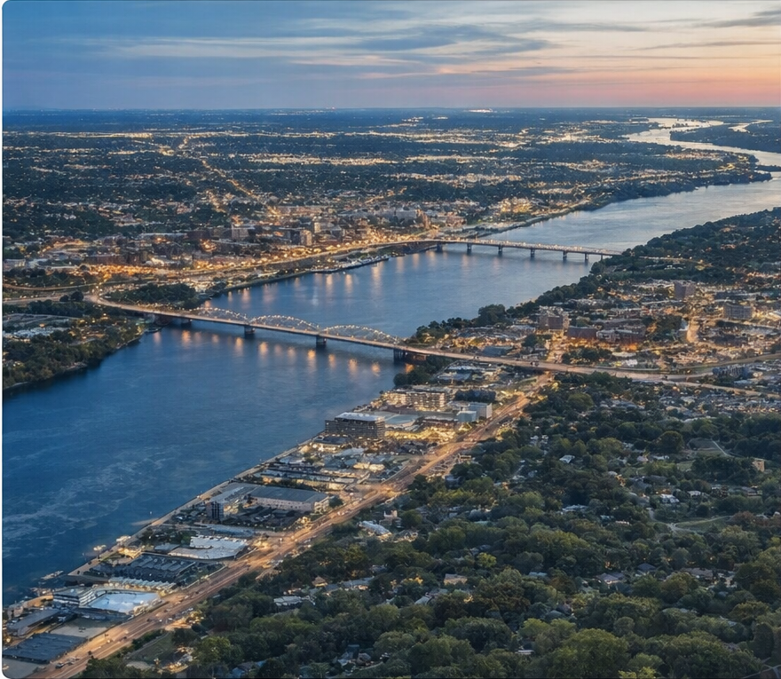

Pool projects
Planned with the patio, grade, privacy, and planting in mind.

Lawns Unlimited of Iowa is a family-run company serving the Quad Cities. We help homeowners solve drainage problems, clean up curb appeal, build patios and walls, and plan pool projects that fit the whole yard instead of fighting it.

That is normal. Some people are tired of standing water. Some are finally ready to fix the front of the house. Some want to build a backyard they will actually use. We help sort out what matters first, what can wait, and what the property needs to work as one finished space.
You can show us what is bothering you about the yard and get real options without a bunch of fluff.
The goal is not a one-day photo. It is a property that feels better to come home to and easier to live with.
If drainage, grading, walls, planting, lighting, or a pool all need to work together, we plan it that way from the beginning.


Planting plans, curb appeal upgrades, privacy screening, grade work, seeding, sod, and layouts that make the property feel finished.

Retaining walls, brick edging, patios, pathways, fire pits, and outdoor kitchens built to feel like they belong there.

Lawn drainage fixes, rough and finish grade, hydro-seed, sod, prairie restoration, and site correction work that protects the investment.

Fiberglass pool and spa installation, irrigation, landscape lighting, artificial turf, and the support pieces that make the yard easier to use.
If you want to know who handles the drainage thinking, the design side, and the field side of the project, we put that all in one place.
We also handle irrigation, lighting, retaining walls, prairie restoration, prescribed burns, artificial turf, outdoor kitchens, and more.


We work across Bettendorf, Davenport, Moline, Rock Island, and nearby communities for projects that need real coordination from grade and drainage to planting, patios, lighting, and pools.

Yes. That is often the right place to start so patios, planting beds, lawns, and pool areas have a better foundation.
Yes. We regularly combine walls, patios, planting, lighting, irrigation, drainage, and fiberglass pool work in one larger plan.
Yes. We serve homeowners throughout the Quad Cities and surrounding communities.